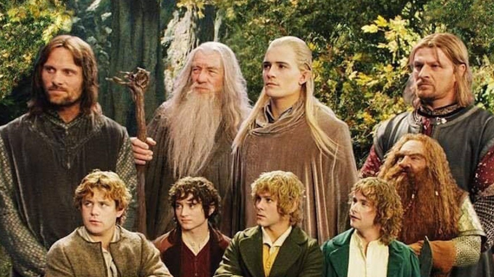

Em uma terra fantástica e única, um hobbit recebe de presente de seu tio
um anel mágico e maligno que precisa ser destruído antes que caia nas
mãos do mal. Para isso, o hobbit Frodo tem um caminho árduo pela frente,
onde encontra perigo, medo e seres bizarros. Ao seu lado para o
cumprimento desta jornada, ele aos poucos pode contar com outros
hobbits, um elfo, um anão, dois humanos e um mago, formando a Sociedade
do Anel.
A Sociedade do Anel

Sinopse:
Neste primeiro livro da trilogia, Frodo Baggins, um hobbit, é
encarregado de destruir o Um Anel para impedir que o Senhor das Trevas,
Sauron, recupere seu poder. Ele forma a Sociedade do Anel, composta por
representantes de diferentes raças, e juntos eles embarcam em uma
perigosa jornada através de terras mágicas e perigosas para chegar à
Montanha da Perdição, onde o Anel deve ser destruído.
O segundo livro segue a separação da Sociedade do Anel após uma
traiçoeira jornada. Enquanto Frodo e seu amigo Sam continuam sua missão
em direção à Montanha da Perdição, os outros membros da Sociedade se
envolvem em batalhas e alianças nas terras de Rohan e Gondor. Novos
personagens e desafios surgem enquanto a ameaça de Sauron se
intensifica.
No emocionante desfecho da trilogia, as linhas finais da guerra são
traçadas. Enquanto Frodo e Sam se aproximam de seu objetivo, as forças
de Sauron se reúnem para um confronto épico. Alianças improváveis são
forjadas, heróis emergem e destinos são cumpridos. A conclusão traz
clareza aos sacrifícios feitos e ao destino da Terra-média após a
derrocada de Sauron.